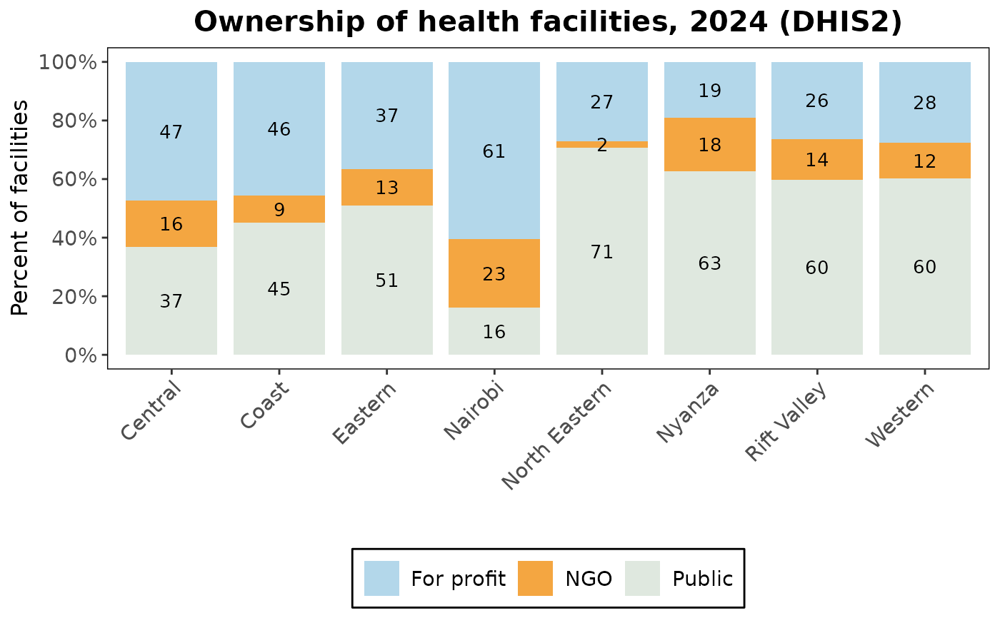

Reshapes health system metrics into the share of health facilities that are private, NGO and
public in each admin level 1 unit, for plot.cd_private_sector(). The public share is what
remains after the private and NGO shares.
Arguments
- .data
Data frame containing subnational health indicators, with the columns
adminlevel_1,private_facility_shareandngo_facility_share, such as the output ofcalculate_health_system_metrics()withadmin_level = "adminlevel_1".- legend_labels
(Optional) A named list to override default legend labels (elements
Private,NGOandPublic).
Value
A tibble of class cd_private_sector with one row per admin level 1 unit and facility
type, and the columns adminlevel_1, facility_type (a factor ordered private, NGO, public,
with the labels as its levels) and share (percent). The attributes lbl_prv, lbl_ngo and
lbl_pub hold the labels used.
Examples
path <- system.file("extdata", "kenya.xlsx", package = "cd2030.core")
data <- load_data(path)
#> ℹ Loading Excel "kenya.xlsx" for parts
#> ! The following columns are empty: anc_1trimester, under5_deaths, total_deaths,
#> ipv2, measles_cases
#> ℹ Successfully loaded and cleaned data
#> ℹ Auto-detect candidates (|group|): vaccine=19, rmncah=28 -> selected rmncah
metrics <- calculate_health_system_metrics(data, admin_level = "adminlevel_1")
generate_private_sector_data(metrics)
#> # A tibble: 24 × 3
#> adminlevel_1 facility_type share
#> <chr> <fct> <dbl>
#> 1 Rift Valley Private 26.4
#> 2 Rift Valley NGO 13.9
#> 3 Rift Valley Public 59.6
#> 4 Western Private 27.6
#> 5 Western NGO 12.2
#> 6 Western Public 60.1
#> 7 Eastern Private 36.6
#> 8 Eastern NGO 12.6
#> 9 Eastern Public 50.9
#> 10 North Eastern Private 27.1
#> # ℹ 14 more rows
# with another label in the legend
shares <- generate_private_sector_data(metrics, legend_labels = list(Private = "For profit"))
plot(shares)
